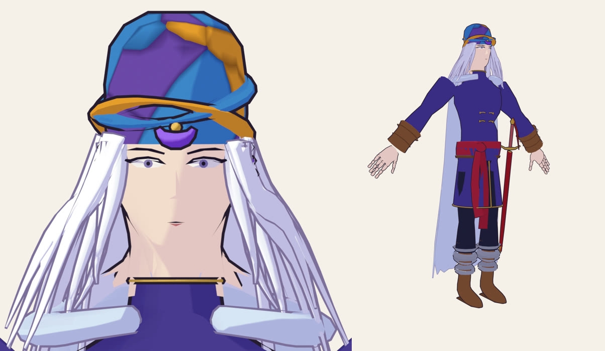

HOLLOW
Path of the Sword
A 3D sword-duelling game built around stamina, stances and reading your opponent. Toon-shaded, built in Godot 4.

Combat
One-on-one duels against AI swordsmen. Every exchange is about stamina.
Stances
Heaven hits hard but guards poorly. Man is balanced. Earth is fast with the best dodge.
Stamina
Tap guard right after a string to recover most of the stamina it cost. Run dry and you stagger.
Countering
Readable wind-ups, one counter per stance, and a punish window after each enemy string.
Opponents
Duelists switch stances, keep their distance, feint and punish missed attacks.
Characters
Low-poly and toon-shaded, with ink outlines and lilac shadows. Each is modelled in Blender from a concept sheet and rigged to the game's skeleton.

Swords
Blades and scabbards in the same style, with an aura that lights the blade.

Status
- In development. Not released yet.
- Engine: Godot 4, for Windows, macOS and Linux.
- Now: tuning combat, and bringing the new characters and swords into the game.
- Later: sword schools, built on top of the new combat.